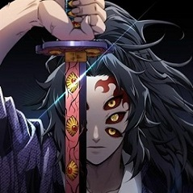
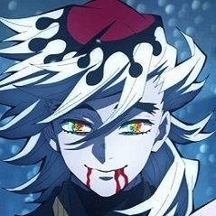
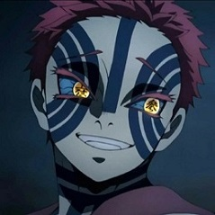

-
Kokushibou
HP 876
Descrição
Kokushibo é um membro das Doze Demônios da Lua, mantendo a posição da Lua Superior Um, sendo o demônio mais poderoso com exceção do próprio Muzan. Antes de se tornar um Demônio, sua identidade humana era Michikatsu Tsugikuni um antigo Caçador de Demônios e o irmão gêmeo mais velho de Yoriichi Tsugikuni
-
Douma
HP 556
Descrição
Doma nasceu com olhos raros em Demon Slayer. Por causa dessa característica, seus pais acreditavam que ele era capaz de ouvir as vozes de Deus e por isso ele foi preparado para se tornar o líder religioso do Culto o Paraíso Eterno. Quando Doma era criança, ele presenciou sua mãe matar seu pai por causa de traição
-
Akaza
HP 476
Descrição
Akaza era Hakuji durante em sua vida humana, um garoto encrenqueiro e problemático que perdeu o pai para uma doença, e mais tarde passaria a viver com seu novo sensei no dojo em que morava agora,